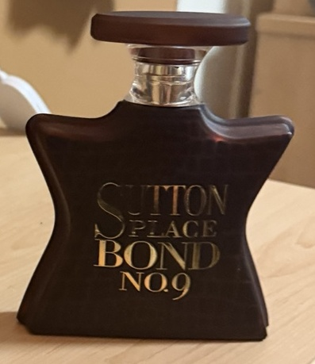

Bond No. 9 Sutton Place. Photo by Pietro Barricelli.
My Favorite Brands
Some of my favorite colognes are from Initio and Bond No. 9. Initio colognes are known for having strong, sweet, and unique scents that last a long time. Bond No. 9 makes many different fragrances inspired by places in New York City. Both brands have high quality colognes that stand out and work well for special events or nights out.
Fragrance Tips
- To make cologne last longer, apply it to areas like your neck and wrists.
- Do not rub your wrists together because this can change how the fragrance smells.
- Applying cologne after a shower can also help it last longer.
- Store your bottles in a cool and dry place away from sunlight.